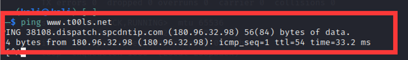

部署CDN的网络找真实IP
1.判断是否CDN
ping 域名

使用超级ping
http://ping.chinaz.com/ 站长之家
http://ping.aizhan.com/ 爱站
https://www.17ce.com/ 17ce
http://ping.chinaz.com/www.t00ls.net ChinaZ
2. 找真实IP的方法集合
2.1 DNS历史绑定记录
通过以下这些网站可以访问dns的解析，有可能存在未有绑cdn之前的记录。
https://dnsdb.io/zh-cn/ DNS查询
https://x.threatbook.cn/ 微步在线
http://viewdns.info/ DNS、IP等查询
https://tools.ipip.net/cdn.php CDN查询IP
https://sitereport.netcraft.com/?url=域名
https://site.ip138.com/www.t00ls.net/ ip138
2.2 域名解析
通过子域名的解析指向 也有可能指向目标的同一个IP上。
使用工具对其子域名进行穷举
在线子域名查询
https://securitytrails.com/list/apex_domain/t00ls.net
http://tool.chinaz.com/subdomain/t00ls.net
https://phpinfo.me/domain/
找到子域名继续确认子域名没有cdn的情况下批量进行域名解析查询，有cdn的情况继续查询历史。
域名批量解析
http://tools.bugscaner.com/domain2ip.html
2.3 国外dns获取真实IP
部分cdn只针对国内的ip访问，如果国外ip访问域名 即可获取真实IP
全世界DNS地址：
http://www.ab173.com/dns/dns_world.php
https://dnsdumpster.com/
https://dnshistory.org/
http://whoisrequest.com/history/
https://completedns.com/dns-history/
http://dnstrails.com/
https://who.is/domain-history/
http://research.domaintools.com/research/hosting-history/ http://site.ip138.com/
http://viewdns.info/iphistory/
https://dnsdb.io/zh-cn/
https://www.virustotal.com/
https://x.threatbook.cn/
http://viewdns.info/
http://www.17ce.com/
http://toolbar.netcraft.com/site_report?url= https://securitytrails.com/
https://tools.ipip.net/cdn.php
2.4 ico图标通过空间搜索找真实ip
下载图标
放到fofa识别
通过zoomeye搜图标
查询 快速定位资源 查看端口是否开放
绑定hosts进行测试
win101
2C:\Windows\System32\drivers\etc\host
参数配置说明: ip + 空格 + 域名
kali1
2sudo vim /etc/hosts
vimcurl 进行测试
2.5 fofa搜索真实IP
domain=”t00ls.net” 302一般是cdn
2.6 通过censys找真实ip
Censys工具就能实现对整个互联网的扫描，Censys是一款用以搜索联网设备信息的新型搜索引擎，能够扫描整个互联网，Censys会将互联网所有的ip进行扫面和连接，以及证书探测。
若目标站点有https证书，并且默认虚拟主机配了https证书，我们就可以找所有目标站点是该https证书的站点。
通过协议查询
https://search.censys.io/ censys
2.7 360测绘中心
2.8 利用SSL证书寻找真实IP
证书颁发机构(CA)必须将他们发布的每个SSL/TLS证书发布到公共日志中，SSL/TLS证书通常包含域名、子域名和电子邮件地址。因此SSL/TLS证书成为了攻击者的切入点。
获取网站SSL证书的HASH再结合Censys
利用Censys搜索网站的SSL证书及HASH，在https://crt.sh上查找目标网站SSL证书的HASH
再用Censys搜索该HASH即可得到真实IP地址
SSL证书搜索引擎：
https://crt.sh crt
找到hash Decimal
转成ipv4 进行搜索
2.9 邮箱获取真实IP
网站在发信的时候，会附带真实的IP地址
- 文件探针
- phpinfo
- 网站源代码
- 信息泄露
- GitHub信息泄露
- js文件
2.11 F5 LTM解码法
当服务器使用F5 LTM做负载均衡时，通过对set-cookie关键字的解码真实ip也可被获取.
例如：Set-Cookie: BIGipServerpool_8.29_8030=487098378.24095.0000，先把第一小节的十进制数即487098378取来，然后将其转为十六进制数1d08880a，接着从后至前，以此取四位数出来，也就是0a.88.08.1d，最后依次把他们转为十进制数10.136.8.29，也就是最后的真实ip。1
2rverpool-cas01=3255675072.20480.0000; path=/
3255675072 转十六进制 c20da8c0 从右向左取 c0a80dc2 转10进制 192 168 13 1942.12 APP获取真实IP
如果网站有app，使用Fiddler或BurpSuite抓取数据包 可能获取真实IP
模拟器 mumu模拟器抓包2.13 小程序获取真实IP
2.14 配置不当获取真实IP
在配置CDN的时候，需要指定域名、端口等信息，有时候小小的配置细节就容易导致CDN防护被绕过。
- 案例1：为了方便用户访问，我们常常将www.test.com 和 test.com 解析到同一个站点，而CDN只配置了www.test.com，通过访问test.com，就可以绕过 CDN 了。
- 案例2：站点同时支持http和https访问，CDN只配置 https协议，那么这时访问http就可以轻易绕过。
2.15 banner
获取目标站点的banner，在全网搜索引擎搜索，也可以使用AQUATONE，在Shodan上搜索相同指纹站点。
可以通过互联网络信息中心的IP数据，筛选目标地区IP，遍历Web服务的banner用来对比CDN站的banner，可以确定源IP。
欧洲：
http://ftp.ripe.net/pub/stats/ripencc/delegated-ripencc-latest 欧洲
北美：
https://ftp.arin.net/pub/stats/arin/delegated-arin-extended-latest 北美
亚洲：
ftp://ftp.apnic.net/public/apnic/stats/apnic/delegated-apnic-latest 亚洲
非洲：
ftp://ftp.afrinic.net/pub/stats/afrinic/delegated-afrinic-latest 非洲
拉美：
ftp://ftp.lacnic.net/pub/stats/lacnic/delegated-lacnic-extended-latest 拉美
获取CN的IP
http://www.ipdeny.com/ipblocks/data/countries/cn.zone CN
- ZMap号称是最快的互联网扫描工具，能够在45分钟扫遍全网。https://github.com/zmap/zmap ZMap
- Masscan号称是最快的互联网端口扫描器，最快可以在六分钟内扫遍互联网。https://github.com/robertdavidgraham/masscan Masscan
2.16 长期关注
在长期渗透的时候，设置程序每天访问网站，可能有新的发现。每天零点 或者业务需求增大 它会换ip 换服务器的。2.17 流量攻击
发包机可以一下子发送很大的流量。
这个方法是很笨，但是在特定的目标下渗透，建议采用。
cdn除了能隐藏ip，可能还考虑到分配流量，
不设防的cdn 量大就会挂，高防cdn 要大流量访问。
经受不住大流量冲击的时候可能会显示真实ip。
站长->业务不正常->cdn不使用->更换服务器。2.18 被动获取
被动获取就是让服务器或网站主动连接我们的服务器，从而获取服务器的真实IP
如果网站有编辑器可以填写远程url图片，即可获取真实IP
如果存在ssrf漏洞 或者xss 让服务器主动连接我们的服务器 均可获取真实IP。2.19 扫全网获取真实IP
https://github.com/superfish9/hackcdn
https://github.com/boy-hack/w8fuckcdn